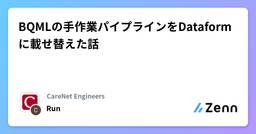

CareNet Engineersのフィード
https://zenn.dev/p/carenet
株式会社ケアネットのエンジニアブログです。CareNetサービスの技術情報を中心に記事を投稿しております。 各記事の内容は個人の意見であり、企業を代表するものではございません。
フィード

BQMLの手作業パイプラインをDataformに載せ替えた話 1
1
CareNet Engineersのフィード
こんにちは！新規事業担当エンジニアのRunです。2026年4月にケアネットにジョインして、忙しくも充実した日々を過ごしています。今回社内ツールの自動化を担当したので、そこで使用した技術について初めてテックブログを書いてみようと思います。具体的にはBigQuery ML（以下BQML）で作成した機械学習のPoCを、自動化できるようにDataformのパイプラインを整備しました。この記事ではDataformの機能を網羅的に説明するのではなく、次の3点に絞って説明しようと思います。手作業だったBQMLの処理を、Dataformのパイプラインに載せたこと更新頻度に応じてタグを分け...
5日前

「AI時代のフレームワーク選定！なぜ今Symfonyが選ばれるのか？」～【php】今週の人気記事TOP5（2026/08/30）
CareNet Engineersのフィード
!この記事はZennからphpのLike数が多い記事のリストを自動的取得し、AIを利用して要約し、自動更新されています。 「AI時代のフレームワーク選定！なぜ今Symfonyが選ばれるのか？」今週の人気記事TOP5（2026/08/30） WordPress管理画面の保存が403になったとき、疑うべきはコードよりWAFだったWordPress管理画面でタグ保存時に403エラーが発生した原因と、その対処法が書かれている記事。エラーの原因がプログラム自体ではなく、サーバー側のWAFによる通信遮断である点を指摘している。WAFがスクリプトを含むPOST通信を遮断する仕組みの...
21日前
「【Laravel 12】知らないと損するエラーハンドリングの新常識とAPI制限対策」～【laravel】人気記事（2026/08/30）
CareNet Engineersのフィード
!この記事はZennからlaravelのLike数が多い記事のリストを自動的取得し、AIを利用して要約し、自動更新されています。 「【Laravel 12】知らないと損するエラーハンドリングの新常識とAPI制限対策」人気記事（2026/08/30） 「売り子と一緒にレジを回す」を成立させるために、オフライン前提のWebレジを作った同人誌即売会にて複数端末でレジを回すため、電波が不安定な会場でもデータ同期を成立させるWebレジアプリの設計が解説されている記事。IndexedDBによる送信キューとUUIDを用いた二重計上防止の同期設計アカウント登録不要のQRコード参加や...
23日前
「安全フィルタの罠！確信度99.9%でも素通りするGeminiセキュリティの現実」～【googlecloud】人気記事（08/30）
CareNet Engineersのフィード
!この記事はZennからgooglecloudのLike数が多い記事のリストを自動的取得し、AIを利用して要約し、自動更新されています。 「安全フィルタの罠！確信度99.9%でも素通りするGeminiセキュリティの現実」人気記事（08/30） BQMLの手作業パイプラインをDataformに載せ替えた話手作業で行っていたBigQuery MLの機械学習パイプラインを、Dataformへ移行して自動化した取り組みについて書かれている記事。SQLのみで完結する仕組みとしてのDataformの選定理由更新頻度に応じたタグ分けによる実行範囲の制御と効率化動的なテーブル名や...
24日前
「AIに丸投げするな！「認知的負債」を防ぎ主導権を握るための開発設計術」～【ai】今週の人気記事TOP5（2026/08/30）
CareNet Engineersのフィード
!この記事はZennからaiのLike数が多い記事のリストを自動的取得し、AIを利用して要約し、自動更新されています。 「AIに丸投げするな！「認知的負債」を防ぎ主導権を握るための開発設計術」今週の人気記事TOP5（2026/08/30） AIに丸投げしないで理解するためのAI開発手法（2026年8月現在）AI開発で生じる技術負債や理解負債を防ぐため、人間がコードや設計を把握して主体性を保つための具体的な開発手法が解説されている。AIへの丸投げで蓄積する技術負債と理解負債の定義ツールによる設計書のビジュアル化と人間によるレビューの重要性設計・計画に労力の9割を割き...
1ヶ月前
「ついに登場！AIエージェントがAWSインフラを自動運用する時代の歩き方」～【aws】今週の人気記事TOP5（2026/08/30）
CareNet Engineersのフィード
!この記事はZennからawsのLike数が多い記事のリストを自動的取得し、AIを利用して要約し、自動更新されています。 「ついに登場！AIエージェントがAWSインフラを自動運用する時代の歩き方」今週の人気記事TOP5（2026/08/30） ローカル AWS エミュレータで Terraform を検証するローカルAWSエミュレータのFlociを用いて、Terraformにおけるインフラ設定ミスの検出可否を検証した記事。静的解析ツールとの使い分けや動作時の注意点も解説されている。LocalStackやFlociなどのローカルエミュレータの特徴セキュリティグループやI...
1ヶ月前
「知らないと損する？Claude CodeとMCPで開発効率を10倍にする方法」～【python】人気記事TOP5（2026/08/30）
CareNet Engineersのフィード
!この記事はZennからpythonのLike数が多い記事のリストを自動的取得し、AIを利用して要約し、自動更新されています。 「知らないと損する？Claude CodeとMCPで開発効率を10倍にする方法」人気記事TOP5（2026/08/30） メモ：Claude CodeのStatus Lineに5時間・週間制限の状況を常に表示するClaude Codeの利用制限状況をステータスラインに常時表示する設定方法をまとめた記事。制限に達する前に使用ペースを調整したい開発者向けに、具体的なスクリプトと設定手順が記述されている。5時間制限と週間制限の利用状況や目安を計算す...
1ヶ月前
「ローカル開発はもう古い？AIエージェントとMCPで実現する次世代ワークフロー完全ガイド」～【claude】人気記事（2026/08/30）
CareNet Engineersのフィード
!この記事はZennからclaudeのLike数が多い記事のリストを自動的取得し、AIを利用して要約し、自動更新されています。 「ローカル開発はもう古い？AIエージェントとMCPで実現する次世代ワークフロー完全ガイド」人気記事（2026/08/30） ローカルでの開発やめませんか？Claude Code / Cursorで開発の8割をクラウドに移した話CursorやClaude Codeのクラウドエージェントを使い、開発の8割をクラウドへ移行した知見をまとめた記事。専用VMによる自律的な実行がもたらす開発効率化と、ローカルとの適切な役割分担について解説されている。専用...
1ヶ月前
GitHub に漏洩したシークレットの自動隔離という諸刃の剣
CareNet Engineersのフィード
こんにちは、セキュリティエンジニアの Yam です。GitHub には、公開されたシークレットを検出し、その発行元へ通知する仕組みがあります。AWS, Google Cloud, Microsoft Azure も、通知や独自の脅威情報をもとに、漏洩した認証情報を隔離または無効化する機能を提供しています。漏洩した認証情報を速やかに封じ込めることは、暗号資産マイニング、不正な API 利用、情報漏洩などを防ぐうえで非常に有効です。各クラウドの方針と影響について整理し、結局どのような対策が必要なのか考えます。 Secret scanning partner programGitH...
2ヶ月前
「【PHP】インデックスが効いても遅い？知らないとハマるボトルネック解消法」～【php】今週の人気記事TOP5（2026/07/26）
CareNet Engineersのフィード
!この記事はZennからphpのLike数が多い記事のリストを自動的取得し、AIを利用して要約し、自動更新されています。 「【PHP】インデックスが効いても遅い？知らないとハマるボトルネック解消法」今週の人気記事TOP5（2026/07/26） PHPカンファレンス2026に登壇、参加しましたPHPカンファレンス2026における登壇と参加の記録について書かれた記事。自身の発表内容の振り返りに加え、会場で聴講した各セッションの要点や学びが記述されている。OPcacheやJITの動作検証に関する登壇の振り返りテストコード削減やチューニングに関する実践的な学びPHP 8...
2ヶ月前
「【警告】Laravel11のBladeでJSON-LDが破損？本番で崩壊する前に知るべき対策」～【laravel】人気記事（07/26）
CareNet Engineersのフィード
!この記事はZennからlaravelのLike数が多い記事のリストを自動的取得し、AIを利用して要約し、自動更新されています。 「【警告】Laravel11のBladeでJSON-LDが破損？本番で崩壊する前に知るべき対策」人気記事（07/26） LaravelとReactでMarkdownナレッジベースを作る #02 WSL2にStarter Kitを立ち上げて日本語化するまでLaravelとReactでMarkdownナレッジベースを開発する連載の第2回として、WSL2上で環境を構築しプロジェクトを立ち上げる手順を解説した記事。WSL2（Ubuntu）におけるP...
2ヶ月前
「2027年廃止のgsutilはもう古い？今すぐ行うべきgcloud storage移行の全手順」～【googlecloud】人気記事
CareNet Engineersのフィード
!この記事はZennからgooglecloudのLike数が多い記事のリストを自動的取得し、AIを利用して要約し、自動更新されています。 「2027年廃止のgsutilはもう古い？今すぐ行うべきgcloud storage移行の全手順」人気記事 Web開発を勉強するためにOCRツールを作成する。(7)Next.jsを用いたOCRツール開発において、ファイルアップロード完了を受け取るエンドポイントの実装手順が解説されている記事。DBのステータス管理とリトライ対策としての冪等性の担保JWTトークン検証やGCS上のファイル存在確認といった各種バリデーションJavaScr...
2ヶ月前
「『完了しました』を信じるな！Claude Codeを自律化する3つの検証ルール」～【ai】今週の人気記事TOP5（2026/07/26）
CareNet Engineersのフィード
!この記事はZennからaiのLike数が多い記事のリストを自動的取得し、AIを利用して要約し、自動更新されています。 「『完了しました』を信じるな！Claude Codeを自律化する3つの検証ルール」今週の人気記事TOP5（2026/07/26） ターミナルを自作したら、1日のコミット数が500を超えて、生産性がバグった話AIエージェントの並列運用を効率化するため、ブラウザ上で動くカスタムターミナルを自作した開発の過程が綴られた記事。視認性を高める工夫により、開発スタイルが変化していく様子が解説されている。複数エージェント並列稼働時における、既存ターミナルの管理上の...
2ヶ月前
「Amplify Gen2はもう古い？AWS Blocksで始める次世代アプリ開発」～【aws】人気記事TOP5（2026/07/26）
CareNet Engineersのフィード
!この記事はZennからawsのLike数が多い記事のリストを自動的取得し、AIを利用して要約し、自動更新されています。 「Amplify Gen2はもう古い？AWS Blocksで始める次世代アプリ開発」人気記事TOP5（2026/07/26） AWS認定試験を全冠して2026 Japan All AWS Certifications Engineersに選出されて思うこと「2026 Japan All AWS Certifications Engineers」に選出された著者が、AWS認定資格の全冠を達成するまでのプロセスを振り返る記事。弱点分野に絞って学習する効...
2ヶ月前
「AIにテストを書かせるのは古い？カバレッジ100%でもバグが出る理由」～【python】今週の人気記事TOP5（2026/07/26）
CareNet Engineersのフィード
!この記事はZennからpythonのLike数が多い記事のリストを自動的取得し、AIを利用して要約し、自動更新されています。 「AIにテストを書かせるのは古い？カバレッジ100%でもバグが出る理由」今週の人気記事TOP5（2026/07/26） MarpのHTMLをコネコネして、biim式RTA画面で登壇したMarpで出力したHTMLをカスタマイズし、スライドをbiim式RTA動画風のレイアウトで発表する手法について書かれている。CSSを用いてスライド表示エリアを縮小し、ゲーム画面枠に収める方法DOMの変更を監視し、タイマーやスライド連動の台詞を動かす制御HTM...
2ヶ月前
「『完了しました』を信じるな！AIエージェントに成果を再取得させる検証ゲートの実装法」～【claude】人気記事（2026/07/26）
CareNet Engineersのフィード
!この記事はZennからclaudeのLike数が多い記事のリストを自動的取得し、AIを利用して要約し、自動更新されています。 「『完了しました』を信じるな！AIエージェントに成果を再取得させる検証ゲートの実装法」人気記事（2026/07/26） 開発しているだけで進捗が更新される。Linear × Claude Code × GitHubで作る開発フローNotion、Claude Code、Linear、GitHubを連携させ、開発作業に伴うタスク管理の手間を削減する開発フローが紹介されている記事。Claude Codeを用いたタスク分解から実装、PR作成までの手順...
2ヶ月前
「Laravel Cloud、月5ドルでどこまでできる？知らないと損する活用術」～【laravel】人気記事TOP5（2026/06/28）
CareNet Engineersのフィード
!この記事はZennからlaravelのLike数が多い記事のリストを自動的取得し、AIを利用して要約し、自動更新されています。 「Laravel Cloud、月5ドルでどこまでできる？知らないと損する活用術」人気記事TOP5（2026/06/28） Laravel Cloud 実践編 - Laravel Cloudは月5ドルでどこまで使えるのかLaravel Cloudを月5ドルの最低コストで運用する実践的な内容について書かれた記事です。国内VPSと比較しながら、その具体的なコストや特性、Scale-to-Zero機能による実際の費用感が解説されています。月5ドルプ...
3ヶ月前
「シニアエンジニアがコード0%？Claude駆動開発の衝撃」～【claude】今週の人気記事TOP5（2026/06/28）
CareNet Engineersのフィード
!この記事はZennからclaudeのLike数が多い記事のリストを自動的取得し、AIを利用して要約し、自動更新されています。 「シニアエンジニアがコード0%？Claude駆動開発の衝撃」今週の人気記事TOP5（2026/06/28） AI時代のコードレビューは人に向けるな、仕組みに向けろAIがコードを生成する時代において、コードレビューの視点を「人」から「仕組み」へ転換するべきだという記事です。AIが生成したコードの問題点を、仕組みの改善を通じて解決するアプローチが解説されています。AIコードレビューでは、個人ではなくコード生成の仕組みに焦点を当てる視点。AIがコ...
3ヶ月前
「Gemini×ClaudeでAI開発コスト64%削減！ハイブリッド戦略」～【googlecloud】人気記事（2026/06/28）
CareNet Engineersのフィード
!この記事はZennからgooglecloudのLike数が多い記事のリストを自動的取得し、AIを利用して要約し、自動更新されています。 「Gemini×ClaudeでAI開発コスト64%削減！ハイブリッド戦略」人気記事（2026/06/28） Gemini を Claude の「サブエージェント」に —— 大規模開発でコストを実測AnthropicのClaude Codeを指揮層に、GoogleのGemini（Antigravity CLI）を実行層とするハイブリッド構成のPluginについて解説する記事です。大規模開発におけるAIコーディングのコストを、同品質を保ちな...
3ヶ月前
「コードを書かないエンジニア爆増中？AIエージェントで生産性10倍」～【ai】今週の人気記事TOP5（2026/06/28）
CareNet Engineersのフィード
!この記事はZennからaiのLike数が多い記事のリストを自動的取得し、AIを利用して要約し、自動更新されています。 「コードを書かないエンジニア爆増中？AIエージェントで生産性10倍」今週の人気記事TOP5（2026/06/28） シニアエンジニアがコードをほぼ書かなくなった理由シニアエンジニアがAI（Claude Code）を深く活用することで、コードを書く業務から離れ、その働き方がどのように変化したかを示す記事。AI駆動開発における人間の新たな役割と、今後のエンジニアに求められる具体的なスキルが解説されている。AIを活用した仕様駆動開発の具体的なワークフロー...
3ヶ月前